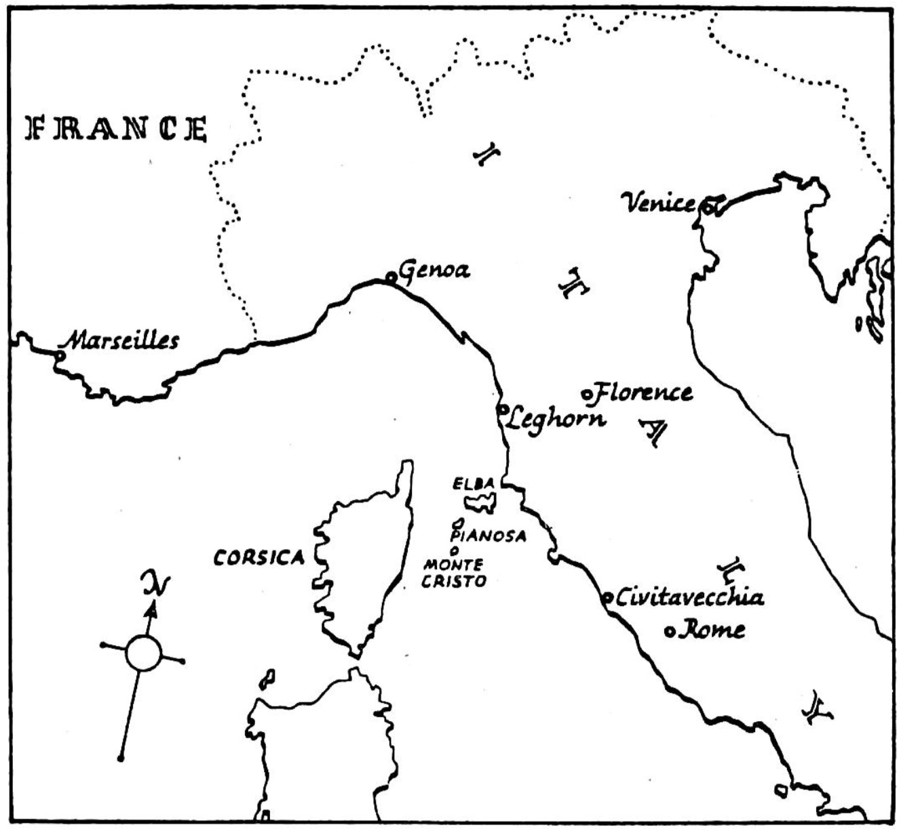

Nineteen
AT MARSEILLES
When daylight came Dantes climbed to the top of the highest rock to see if there were any houses or men on the island. There were none. It was truly a desert island, hard rock, with only some trees and grass on the thin soil of the lower parts.
Returning to the treasure-place, he raised the stone, then went into the farther room and took as many jewels as he could safely hide in his clothing. Then he put back the earth over the box, and put sand over the place, so that no one might know that the earth there had ever been moved. He then put a large stone over the opening and covered it with earth, and set there also some quick-growing plants. Then he went over the ground all round about, hiding every footmark. He left the place looking as if it had never been visited.
This done, he set himself to wait for the return of his friends. This was no easy matter. It was no joy to him to sit and watch over his great treasure. He felt the desire now to return to live among men, and he knew well the power which these riches would give him. Danglars, Caderousse, even Villefort, would be as nothing to him now—little people not worth his thought. What good might he not do with so much money! and what joy he could bring to those who were nearest his heart!
After six days The Young Amelia returned. From a distance Dantes knew the shape of her sails and her manner of sailing. He went down to the shore, pretending that his knee still pained him, and asked how the business had gone on.
They answered that they got the goods safely to land. But, just as they had finished, they heard that a Government ship had just left Toulon and was hurrying to catch them. They went off as quickly as possible, and wished that Dantes had been with them, for he could have helped them much. As it was, they were almost caught when, happily, night came on, and they were able to turn back on their course and so get away.
They were all very sorry that Dantes should not get his part of the gains, which, they said, were large. It was all Dantes could do not to laugh at this; how much he would have gained if he had only gone with them!
The Young Amelia had come to Monte Cristo only to take him off. He went on board and the ship sailed for Leghorn.
At Leghorn Dantes went to the house of a certain merchant whom he knew, and sold to him four of his smallest stones. Dantes was half afraid that questions might be asked at finding such jewels in the hands of a common seaman. But the merchant said nothing, having paid for them far less than they were worth.
On the next day Dantes gave Jacopo an entirely new ship and a present of money also. He then went to the Captain and told him that a large amount of money had been left to him by his uncle who had just died, and that he wished to leave ship. The Captain was sad at losing him, and did all he could to get him to stay. Dantes gave such fine presents to the men that they all wished him every possible happiness.
This done, Dantes left Leghorn for Genoa.
Arriving at Genoa, he saw a beautiful little ship being tried in the bay. It had just been built by the order of an Englishman: it was so small that Dantes felt that he could sail it himself, alone, without help: it was so fast that no other ship upon the water would catch it.
Dantes, offering a very large amount of money over the proper price, asked the builder to let him have it with all its ship's papers. The Englishman was not expected for some months, and in that time the man thought he could build another ship of the kind. So the matter was settled.
The builder offered to find seamen for the ship, but Dantes said he needed none; that he was used to sailing alone; that indeed the whole pleasure of sailing lay in doing everything for himself. But he asked the man if he would make for him a hidden place in the ship, with three separate parts in it. This might be made just at the head of his bed. The builder promised to have this ready by the next day.
On the next day Dantes sailed away from Genoa, alone. A large crowd had come together to see the rich English gentleman who always sailed his ship himself. There were cries of wonder when they saw how perfectly the ship moved under his hand. Indeed Dantes knew that the men of Genoa, who are the masters of shipbuilding, had never made anything so perfect.
The people followed the ship with their eyes so long as they could see it. Then they began to wonder where it was going. Some said Corsica; others the Island of Elba; others thought it might be Africa. But none thought of Monte Cristo.
It was there that Dantes guided his ship; and on the second day he arrived. She had covered the distance from Genoa in thirty-five hours. Dantes had carefully noticed the line of the shore, and instead of going to the usual place, he took his ship into the little bay.
There was no one on the island. It seemed as if no one had been there since he went away. The treasure was just as he had left it.
Early on the next morning he began the work of carrying his riches on board. Before night came, the whole of the treasure was safely stored in the hidden place.
One fine morning a small, but wonderfully beautiful ship sailed into Marseilles. It stopped just near the steps from which, on that never-to-be-forgotten night, Dantes had been put on board the boat which was to take him to Chateau d'If.
The officers of Government came on board to look at the ship's papers. A soldier stood near the steps; even now that sight sent fear into the heart of Dantes.
Dantes had learnt a great deal of English from Faria. He gave to the officers the Englishman's papers which he had got at Genoa, and he spoke to them in bad French.
"There is no reason," said the officers, wishing to please the rich Englishman, "why the gentleman should not go on shore at once, if he wishes to. The papers are all in order."
One of the first men whom he met on the shore was old Nicolas, who had served with him on the Pharaoh. He went straight up to the fellow and asked him a number of questions, carefully watching the man's face. No word or look showed that Nicolas knew the name of the man with whom he was speaking.
He gave him a piece of money and turned away; but before he had gone many steps he heard Nicolas loudly calling him to stop. Dantes turned to meet him.
"You meant," said the good fellow, "to give me a piece of silver, but you have given me this gold by mistake."
"Yes, my good man," said Dantes, "I see I made a small mistake. As thanks for pointing it out to me, take this second piece of gold."
The man was so surprised that he could not speak, but he stood looking after Dantes as he went away. Then he returned, saying to himself, "That must be one of those rich fellows from India. Who else would give money away so freely?"
Dantes continued on his way. Each step he took beat upon his heart with fresh hopes, and fears. Every tree, every street, was crowded with thoughts of the past.
Thus he went on until he arrived at the end of the Noailles road. From there he could see the corner of the street which led to his father's house. At this point, so rich with the thoughts of a father's love, his knees gave way under him; and a darkness came before his eyes. Had he not held on to one of the trees, he would have fallen to the ground. After a few minutes he felt stronger. He passed his hand across his face. Then he went on, and did not stop until he found himself at the door of the house in which his father lived.
The flowers which his father loved were still in the window. But, although the day was warm, the window was closed. There seemed to be a strange silence about the place—a silence as if the wings of death were passing over it.
He opened the door. Something white—a letter—lay at his feet. He picked it up. His eyes perhaps were blind; else why could he not read the name? Or why could he not read it properly? It looked like the name of Mercedes. But why? He was dreaming.
Dantes came to the door of his father's room. It was shut, but within he heard the sound of quietly moving feet. Then there was silence, broken at last by a weak cry of pain.
And then there came a voice, weak and far, as the voice of a bird lost in the gathering darkness.
Someone answered it very gently: "Yes, soon; very soon now. But keep quiet; you need all your strength."
Dantes put forth his hand to open the door, but it fell back to his side and his feet would not move from the floor.
"But I tell you he is here," said the weak voice again. "Why do you not go and call him in?"
"Try to get a little sleep now. Perhaps when you wake ... "
"I tell you he is here. Have I not seen him coming up the street, seen him stand beside that tree, and look up at this window with his dear eyes? So changed. So changed."
"Yes, he will be changed, won't he?
"Tell him to come quickly. Tell him that Death waits by my side, waits only until I see him. Open the door, I say." The voice grew stronger with the last glimmer of life. "Open the door, I say, and bring him in!"
There were footsteps. The door opened; and Mercedes stood there, dark-eyed from long watching by that bedside.
She saw him; doubted, finding him so changed; and she fell forward with one cry, as if her heart were broken with the suddenness of too much joy. Then seizing his hand she cried, "Come quickly, so that he may see you."
The old eyes looked up at him, dim and beautiful in their last silent look of love.
The eyes closed. "Kiss me," he said; "hold me in your arms, Edmond ... You may come now, Death."
. . .
At the return of Napoleon in 1815 Danglars had left France; and he had not been seen again: it was believed that his ship was lost in a storm. Fernand was killed at the battle of Waterloo. Caderousse was too old to go as a soldier at that time; he still lived, said Mercedes, but he was very poor.
. . .
"Look," said old Nicolas to the soldier standing by the steps.
On the deep blue line which separates the Mediterranean sea from the sky, was a white sail, no larger than a bird's wing.
"He's gone," said old Nicolas, "that rich Englishman."
"Yes, I saw him go," replied the other; "—and her."
QUESTIONS
1 1. What had happened on the ship?
2. What was (a) Edmond Dantes, ( b ) Mr. Morrel?
3. What did Danglars do?
1. (a) Where did Dantes lose IV 2 days? ( b ) Who ordered him to do this?
2. Who asked about the ship?
1. How many letters did Leclerc give Dantes?
2. Who must Dantes visit (a) his.
3. Where did the Catalans come from?
1. Who will be captain of the Pharaoh?
2. Is Dantes friendly with Danglars?
2 1. What did Dantes's father give to Caderousse?
2. What money did Dantes give his father?
3. What was Caderousse?
1. At what did Caderousse 'give a hungry look'?
2. What did Caderousse tell Danglars?
3. Who was Fernand?
3 1. What did Fernand want?
2. What answer did Mercedes give?
3. What did Mercedes say about Dantes?
1. 'If he is dead.. What did Mercedes say?
2. Did Fernand take Dantes's hand?
3. Where did Fernand stop running?
1. When is the marriage to be?. or
2. Why must Dantes go to Paris?
4 1. Who wrote the letter?
2. What did the letter say?
3. Who took the letter?
5 1. Who sat on Mercedes's right?—on her left?
2. What sound was heard outside?
3. What happened to Dantes?
6 1. Who was Mr. Villefort?
2. What strange chance moved Mr. Villefort's heart?
3. Who gave Dantes the letter to take to Paris?
1. What did Villefort promise to do at first?
2. What name was written on the letter?
3. Who is Villefort's father?
1. What did Villefort do to the letter?
2. What must Dantes never say?
3. What must Villefort make sure? 'That he.. /
7 1. Dantes was placed in a ... What?
2. What light could be seen?
3. Where was Dantes being taken?
1. For what prisoners is Chateau d'If used?
2. Where was the room?
1. What did Dantes wish to do?
2. What will be allowed if Dantes pays money?
1. What was the mad man offering?
2. What did Dantes ask the man to do?
3. What did Dantes say he would do to the man?
4. Where was Dantes put?
8 1. Who visited the prison?
2. Who was the other dangerous prisoner? 'The ... in..
1. Who visited the prison?
2. What did the Officer say to the Governor?
1. The Officer asked Dantes, 'Can I trust ... ?* Trust what?
2. What is the name of the other prisoner?
3. What was he doing?
1. What will Faria write?
2. How far away is the place?
3. What may they do if they do not find the money?
1. What was written in the book about Dantes?
2. What did the Officer write?
9 1. What will Dantes do so that he may die?
2. What did he hear? 'A noise as if ... *
1. What did Dantes do when the keeper brought his food?
2. What will an escaping prisoner do if Dantes makes a noise?
3. What was the prisoner doing in the evening?
1. What did Dantes use for cutting the wall?
2. With what did he hide the place where he cut?
1. What did the voice say?
2. Onto what does Dantes's room open?
3. Where did Faria think his hole would lead?
1. What did Faria tell Dantes to do?
2. Dantes said, 'If we cannot escape, we will ... *
What?
1. Where was Dantes when the keeper came?
2. What did Dantes see in the hole?
10 1. Faria appeared to be a ... rather than a ...
2. How long a path did Faria make?
3. One wall of the room is against ... (a) ... ;
another is against ... (£) ...
1. What does the window look out onto?
2. Who is there?
1. What did Faria want to do in Italy?
2. (a) How long did it take Faria to make the things and to cut the hole?
( b ) Will he try again?
1. Dantes wants to cut a hole to ... Where?
2. What will not Faria allow Dantes to do?
3. What often supplies openings for escape?
1. What has Faria written in prison?
2. How many books did he learn by heart?
1. How many Greek words does Faria need to express his needs?
2. What did he make pens out of?
11 1. How did Faria know the time?
1. How long would it take Faria to teach Dantes all the facts he knows?
2. What two things did Dantes learn?
1. What did Faria cry out?
2. What did Dantes promise?
3. Where would the soldier fall?
1. What happened to Faria?
2. Where is the red liquid hidden?
3. After how long did Faria show signs of life?
1. What will Faria never do again?
2. What did Dantes promise?
3. What must Dantes do now that they cannot escape?
12 1. What did Dantes look at?
2. What did Dantes think when Faria talked about treasure?
1. Who came to see Faria?
2. Why did Faria hide the condition of his arm and leg?
3. Where did Faria try to go?
1. How did Borgia mean to kill the two men?
2. What did Spada write to his brother's son (the
Captain)?
1. What is there among the uncle's papers?
2. What happened to all the things of the last Spada?
1. What was there in the prayer book?
2. What happened when the paper began to burn?
3. Where is the treasure hidden?
4. What will Dantes get if Faria dies?
13 1. Why did Dantes say 'Neither of us will leave the prison?'
2. What did Dantes see on Faria's face?
1. How many drops must Dantes give to Faria?
2. What were Faria's last words?
1. What are the grave-clothes of the Chateau d'If?
2. How did they make sure that Faria was really dead?
3. At what time will the body be taken away?
14 1. What surprising thought came to Dantes?
2. Where did he put Faria's body?
3. What did Dantes do?
1. Where did Dantes think he would be put?
2. What did the men say when they lifted the bag?
1. What was tied onto the bag?
2. What did the men do to the bag?
15 1. Why did Dantes not try to go to the nearest islands?
2. For how long did he swim?
1. What woke Dantes?
2. Were the five fishermen saved?
1. What did Dantes put on his head?
2. How did the seamen pull Dantes into the boat?
1. Why did the Captain think that Dantes was a thief?
2. How did Dantes show that he knew those seas?
1. Where may they leave Dantes?
2. What did they hear?
3. What did Dantes ask Jacopo?
16 1. What sort of ship was The ZJoung Amelia?
2. What did the ship pass early next morning?
1. The Captain wanted to find a place where he could ... Do what?
2. What meeting-place did the Captain choose for this?
17 1. At what time did they see Monte Cristo?
2. What did Dantes ask? 'Are there not any ... ?'
1. What did Dantes say he would do? 'Go
2. What did Dantes do when the men shouted to him?
1. What did Dantes ask the Captain to leave?
2. When will the ship come back?
3. (a)Who wanted to stay with Dantes? ( b ) Did he stay?
18 1. Why did Dantes know that the rock had been moved downwards?
2. What did he use to move the rock?
1. What words of the writing did he remember?
2. How had the opening been hidden?
1. What did the axe hit?
2. How did Dantes get light in the cave?
What was in the first part of the box? ... in the second part? ... in the third part?
19 1. How many jewels did Dantes take?
2. What did he do with the box?
3. To what place did the ship take Dantes?
1. What did Dantes do at Leghorn?
2. What did he give to Jacopo?
3. What did he buy in Genoa?
1. How long did it take to put all the treasure on the ship?
2. What papers did Dantes show to the officer at
Marseilles?
1. [a) Where had Nicolas met Dantes? ( b) Did
Nicolas know him again?
2. What things were in the window of his father's house?
3. Whose name was on the letter?
1. What was the father saying?
2. Who opened the door?
3. What had happened to Danglars? ... Fernand?
... Caderousse?
PRONUNCIATION OF THE CHIEF NAMES OF PERSONS AND PLACES
The pronunciation given is the system used in the International Phonetic Alphabet.
Amelia
Antoine
Caderousse
Caleseragne
Canebière
Caesar Borgia
Catalans
Charenton
Chateau dTf
Civita-vecchia
Corsica
Danglars
Elba
Faria
Fenestrelle
Fernand
Florence
Genoa
Jarros
La Reserve
Leclerc
Leghorn
Maire
Malta
Marseilles
Marshal Bertrand
Mediterranean
Mercedes
Monte Cristo
Morrel
Napoleon
Noailles
Noirtier
Paris
Pharaoh
Pianosa
Policar (Morrel)
Pomegues
Ratonneau
Riou
Tiboulen
Valence
Venice
Villefort
Waterloo